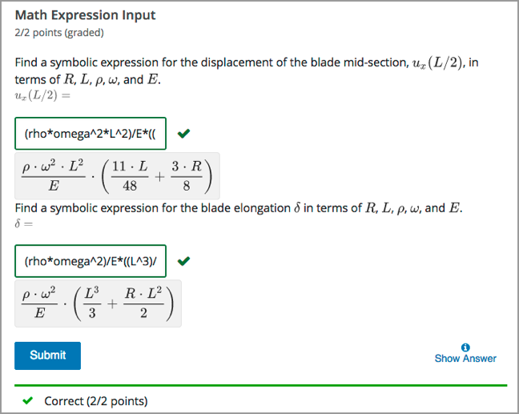

11.18. Math Expression Input Problems#
Note
EdX offers full support for this problem type.
The math expression input problem type is a core problem type that can be added to any course. At a minimum, math expression problems include a question or prompt and a response field for a numeric answer.
For more information about the core problem types, see Working with Problem Components.
11.18.1. Overview#
In math expression input problems, learners enter text that represents a mathematical expression. The text is converted to a symbolic expression that appears below the response field. Unlike numerical input problems, which only allow integers and a few select constants, math expression input problems can include unknown variables and more complicated symbolic expressions.
For more information about how learners enter expressions, see learners:Math Formatting in the EdX Learner’s Guide or Completing Mathematical and Scientific Assignments in the Open edX Learner’s Guide.
Note
You can make a calculator tool available to your learners on every unit page. For more information, see Calculator Tool.
For math expression input problems, the grader uses numerical sampling to determine whether a learner’s response matches the math expression that you provide, to a specified numerical tolerance. You specify the allowed variables in the expression as well as the range of values for each variable.
When you create a math expression input problem in Studio, you use MathJax to format text strings into “beautiful math.” For more information about how to use MathJax in Studio, see MathJax for Mathematics.
Note
Math expression input problems currently cannot include negative numbers raised to fractional powers, such as (-1)^(1/2). Math expression input problems can include complex numbers raised to fractional powers, or positive non-complex numbers raised to fractional powers.
11.18.1.1. Example Math Expression Input Problem#
In the LMS, learners enter a value into a response field to complete a math expression input problem. The following example shows a completed math expression input problem that contains two questions.
{kind=link}
The open learning XML (OLX) markup for this example math expression input problem follows.
<problem>
<formularesponse inline="1" type="cs" samples="R,omega,E,rho,L@0.1,0.1,0.1,0.1,0.1:10,10,10,10,10#10" answer="(rho*omega^2*L^2)/E*((11*L)/48 +(3*R)/8)">
<label>Find a symbolic expression for the displacement of the blade mid-section, \( u_{x}(L/2) \), in terms of \(R\), \(L\), \(\rho\), \(\omega\), and \(E\).</label>
<description>\(u_x(L/2) = \)</description>
<responseparam type="tolerance" default="1%"/>
<textline inline="1" math="1"/>
<solution>
<div class="worked-solution">
<p><b>Obtaining the displacement at the mid-section \( u_{x}(x = L / 2)\):</b></p><p>According to the definition of strain,</p>
\[ \frac {du_{x}(x)} {dx} = \epsilon_a(x).\]
<p>Therefore, we can obtain the displacement field as</p>
\[ u_x(x) = u_x(0) + \int_0^x \epsilon_a (x') dx' = u_x(0) + \left[ \frac{\rho \omega^2}{E} \left(\frac{L^2x'}{2} - \frac{(x')^3}{6} + RLx' - \frac{R(x')^2}{2} \right) \right]_0^x\]
<p>Since the bar is fixed at x=0, therefore \(u_x(0)=0\). Hence we obtain</p>
\[\Rightarrow u_x(x) = \frac{\rho\omega^2}{E} \left( \frac{L^2x}{2} - \frac{x^3}{6} + RLx - \frac{Rx^2}{2} \right).\]
<p>The displacement of the bar at \(x=L/2\) is </p>
\[u_{x}(L/2) = \frac {\rho\omega^2L^2}{E} \left( \frac {11L}{48} + \frac {3R}{8} \right).\]
</div>
</solution>
</formularesponse>
<formularesponse inline="1" type="cs" samples="R,omega,E,rho,L@0.1,0.1,0.1,0.1,0.1:10,10,10,10,10#10" answer="(rho*omega^2)/E*(L^3/3 + (R*L^2)/2)">
<label>Find a symbolic expression for the blade elongation \( \delta \) in terms of \(R\), \(L\), \(\rho\), \(\omega\), and \(E\).</label>
<description>\(\delta = \)</description>
<responseparam type="tolerance" default="1%"/>
<textline inline="1" math="1"/>
<solution>
<div class="worked-solution">
\[ \delta = \frac {\rho \omega^2}{E} \left( \frac {L^3} {3} + \frac { RL^2} {2} \right) \]
<p><b>Obtaining the total elongation of the blade \( \delta \):</b></p>
<p>The strain field in the bar is</p>
\[ \epsilon_a(x) = \frac {\mathcal{N}(x)}{EA} = \frac {\rho \omega^2 \left( \frac {L^2 - x^2}{2} + R\left(L-x\right)\right)}{E}. \]
<p>We can now calculate the elongation of the bar as the following.</p>
\[ \delta = \int_0^L \epsilon_{a}(x)dx = \int_0^L \frac {\rho \omega^2}{E} \left( \frac {L^2 - x^2}{2} + R\left(L-x\right)\right)dx. \]
\[ \Rightarrow \delta= \left[ \frac { \rho \omega^2}{E} \left( \frac {L^2x}{2} - \frac {x^3}{6} + RLx - \frac {Rx^2}{2} \right)\right]_0^L.\]
\[ \Rightarrow \delta = \frac {\rho \omega^2}{E} \left( \frac {L^3}{2} - \frac{L^3}{6} + RL^2 - \frac {RL^2}{2} \right).\]
\[\Rightarrow \delta= \frac {\rho \omega^2}{E} \left( \frac {L^3}{3} + \frac {RL^2}{2} \right). \]
</div>
</solution>
</formularesponse>
</problem>
11.18.1.2. Analyzing Performance on Math Expression Input Problems#
For the math expression input problems in your course, you can use edX Insights to review aggregated learner performance data and examine submitted answers. For more information, see Using edX Insights.
11.18.2. Adding a Math Expression Input Problem#
You add math expression input problems in Studio by selecting the Problem component type and then using the advanced editor to specify the prompt and the acceptable answer or answers.
To create a math expression input problem, follow these steps.
In the unit where you want to create the problem, under Add New Component select Problem.
In the problem editor, select Advanced problem types. Then select Math Expression Input.
Replace the guidance provided by the template to add your own text. For example, replace the question or prompt, answer options, and solution.
Update the OLX to use any additional elements and attributes in your problem.
Provide an identifying Display Name and define settings for the problem. For more information, see Defining Settings for Problem Components.
Select Save.
11.18.3. Math Expression Input Problem OLX Reference#
11.18.3.1. Template#
Note
The following template includes a Python script. When you add a
script to a problem component, do not add to or change its internal
indentation. A “jailed code” error message appears when you save
the problem in Studio if the <script> element is indented.
<problem>
<formularesponse type="ci" samples="R_1,R_2,R_3@1,2,3:3,4,5#10" answer="$computed_response">
<label>Problem text</label>
<responseparam type="tolerance" default="0.00001"/>
<formulaequationinput size="20" />
<script type="loncapa/python">
computed_response = PYTHON SCRIPT
</script>
<solution>
<div class="detailed-solution">
<p>Explanation or solution header</p>
<p>Explanation or solution text</p>
</div>
</solution>
</formularesponse>
</problem>
This template includes a placeholder value for the samples attribute of
samples="R_1,R_2,R_3@1,2,3:3,4,5#10". You enter values for this attribute
in the following format:
samples="VARIABLES@LOWER_BOUNDS:UPPER_BOUNDS#NUMBER_OF_SAMPLES". Additional detail follows in the description of the <formularesponse>
element.
11.18.3.2. Elements#
For math expression input problems, the <problem> element can include this
hierarchy of child elements.
<problem>
<formularesponse>
<label>
<description>
<formulaequationinput>
<responseparam>
<script>
<solution>
In addition, standard HTML tags can be used to format text.
11.18.3.2.1. <formularesponse>#
Required. Indicates that the problem is a math expression input problem.
The <formularesponse> tag is similar to the <numericalresponse> tag
used by numerical input problem types, but
<formularesponse> allows unknown variables.
11.18.3.2.1.1. Attributes#
Attribute |
Description |
|---|---|
|
Can be |
|
The correct answer to the problem, given as a mathematical expression. If you precede a variable name in the problem with a dollar sign ($), you can include a script in the problem that computes the expression in terms of that variable. |
|
Specifies important information about the problem in the following lists.
Commas separate items inside each of the four individual lists. The at sign (@), colon (:), and hash tag (#) characters separate the lists. An example of the format follows.
For example, a
|
Variable names must be at least one character long. They must start with a letter, which can be followed by letters, numbers and underscores. We strongly recommend only using one underscore, which renders to students as a subscript.
Tensor notation is also supported, as Name_{ijk}^{123}, where the name must start with a letter, but can otherwise contain letters or numbers, subscripts are contained in the lower braces, and superscripts are contained in the raised braces. Superscripts and subscripts must only be letters or numbers. No other underscores can appear in the name. Note that the subscript must come first, and the braces ensure that the superscripts are not confused with exponentiation.
All variable names (standard and tensor formats) may contain one or more apostrophes (primes) at the end of the variable name, for example, to indicate a derivative or new coordinate system. Note that some students may have trouble entering primes, which some browsers/operating systems automatically convert to a “smart apostrophe” (tablets are most likely to have this issue). We recommend providing a variable name that students may copy and paste to get around this problem.
The following are examples of valid variable names: V_out, m_1, G_{ij}, H^{xy}, f', x_1'', and H_{ij}^{12}''.
11.18.3.2.1.2. Children#
<label><description><formulaequationinput><responseparam><script><solution>
11.18.3.2.2. <label>#
Required. Identifies the question or prompt. You can include HTML tags within this element.
11.18.3.2.2.1. Attributes#
None.
11.18.3.2.2.2. Children#
None.
11.18.3.2.3. <description>#
Optional. Provides clarifying information about how to answer the question. You can include HTML tags within this element.
11.18.3.2.3.1. Attributes#
None.
11.18.3.2.3.2. Children#
None.
11.18.3.2.4. <formulaequationinput>#
Required. Creates a response field in the LMS where learners enter a response.
Learners also see a second field below the response field that displays a typeset version of the entered response. The parser that renders a learner’s plain text into typeset math is the same parser that evaluates the response for grading.
11.18.3.2.4.1. Attributes#
Attribute |
Description |
|---|---|
|
Optional. Defines the width, in characters, of the response field in the LMS. |
11.18.3.2.4.2. Children#
None.
11.18.3.2.5. <responseparam>#
Used to define an upper bound on the variance of the numerical methods used to approximate a test for equality.
11.18.3.2.5.1. Attributes#
Attribute |
Description |
|---|---|
|
|
|
Required. A number or a percentage specifying how close the learner and grader expressions must be. If you do not include a tolerance, the expression is vulnerable to rounding errors during sampling. The result of such unavoidable errors is that the grader can mark some learner input as incorrect, even if it is algebraically equivalent. |
11.18.3.2.5.2. Children#
None.
11.18.3.2.6. <script>#
Optional. Specifies a script that the grader uses to evaluate a learner’s
response. A problem behaves as if all of the code in all of the script elements
were in a single script element. Specifically, any variables that are used in
multiple <script> elements share a namespace and can be overridden.
As with all Python code, indentation matters, even though the code is embedded in XML.
11.18.3.2.6.1. Attributes#
Attribute |
Description |
|---|---|
|
Required. Must be set to |
11.18.3.2.6.2. Children#
None.
11.18.3.2.7. <solution>#
Optional. Identifies the explanation or solution for the problem, or for one of the questions in a problem that contains more than one question.
This element contains an HTML division <div>. The division contains one or
more paragraphs <p> of explanatory text.